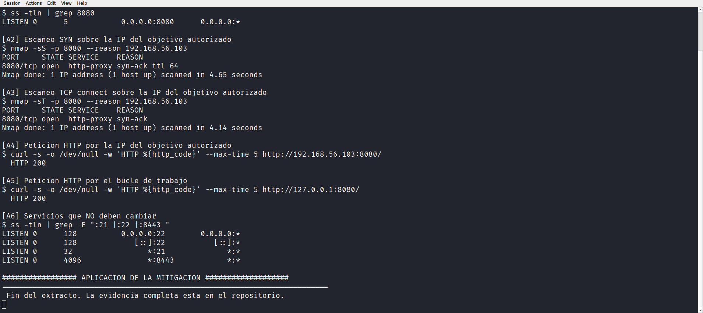
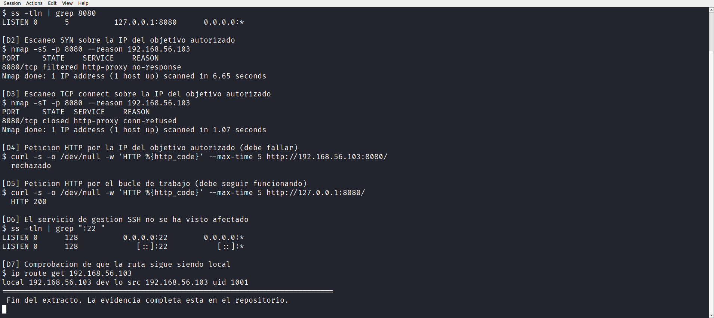
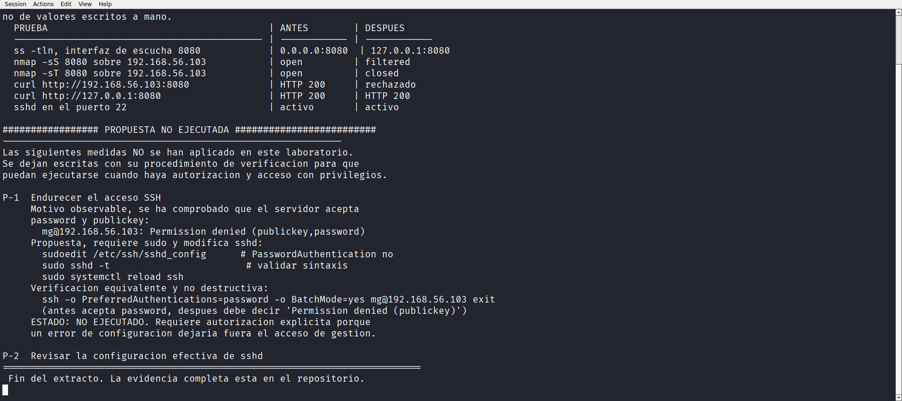

Laboratorio 06 de 06 · Estado completado
Mitigación del servicio HTTP y verificación de alcance
Un servidor de desarrollo que escucha en todas las interfaces es un servidor expuesto a la red. Este laboratorio delimita el servicio al interfaz de loopback y mide el efecto real con las mismas pruebas que detectaron el problema.
1. Resumen para una persona de selección
El Laboratorio 04 identificó un servidor HTTP de Python escuchando en 0.0.0.0:8080. Esa dirección significa todas las interfaces, de modo que cualquier equipo de la red podía pedir la página. Para un desarrollo local eso es más superficie de exposición de la necesaria.
La mitigación consistió en volver a arrancar el mismo servidor limitado a 127.0.0.1, la interfaz de loopback. Después se repitieron las mismas comprobaciones remotas y la misma prueba local. El resultado es que la red ya no llega al servicio, el equipo local sí, y el resto de servicios del equipo siguen intactos. Todo queda documentado con una tabla comparativa y con la reversibilidad del cambio.
Laboratorio académico sobre una máquina virtual propia. La única modificación aplicada es el parámetro de enlace del servidor HTTP de prueba, que se restaura en un paso documentado.
2. Objetivo técnico
Reducir la superficie de exposición del servicio HTTP del laboratorio delimitándolo a loopback, y comprobar de forma medible que la exposición desaparece sin romper el uso previsto.
- Capturar el estado previo con las mismas pruebas usadas en los laboratorios 01 a 05.
- Reconfigurar el enlace del servidor para escuchar solo en
127.0.0.1. - Verificar desde la red y desde el propio equipo.
- Documentar la reversibilidad y las mejoras que requieren autorización adicional.
3. Entorno y alcance
Misma línea base que los laboratorios anteriores. Kali Linux 2026.3 en VirtualBox, objetivo autorizado 192.168.56.103, escáner ejecutado por acceso SSH desde el propio equipo.
Único objetivo 192.168.56.103. La modificación se limita al servidor HTTP de prueba del laboratorio y es reversible en un paso.
No se modificó el cortafuegos de la máquina. No se reinició el demonio SSH. No se alteró la configuración de vsftpd. No se apagó la máquina virtual.
3.1 Servicios que permanecen sin tocar
Servicio modificado: HTTP (python http.server) en 8080
Servicios sin cambios: SSH en 22, FTP en 21, TLS en 8443
Cortafuegos: sin cambios
Red de la máquina: sin cambios4. Conocimientos previos
0.0.0.0contra127.0.0.1. La primera escucha en todas las interfaces, la segunda solo en loopback. Es la diferencia entre un servicio local y un servicio de red.- Superficie de exposición. Conjunto de puntos por los que un atacante puede llegar a un sistema. Cerrar interfaces que no hacen falta es una de las formas más baratas de reducirla.
filteredcontraclosed. El primero significa que el paquete no obtuvo respuesta, el segundo que el sistema rechazó la conexión. La combinación de ambos estados es lo que se esperaba al limitar el servicio a loopback.- Reversibilidad. Toda mitigación de laboratorio debe poder deshacerse en un paso documentado, o no es una mitigación sino un daño.
5. Procedimiento reproducible
- Capturar el estado previo, puertos y respuesta HTTP desde la red.
- Detener el servidor HTTP de prueba.
- Relanzarlo limitado a
127.0.0.1. - Repetir el escaneo de puertos desde la perspectiva de red.
- Comprobar la respuesta HTTP desde la red y desde el propio equipo.
- Confirmar que los demás servicios siguen operativos.
- Documentar la comparación y la reversibilidad.
6. Comandos exactos y explicación de sus opciones
# antes, servidor escuchando en todas las interfaces
$ nmap -sS -p 8080 --reason -oA /home/mg/evidencias/lab06/antes_sS 192.168.56.103
$ nmap -sT -p 8080 --reason -oA /home/mg/evidencias/lab06/antes_sT 192.168.56.103
$ curl -sI http://192.168.56.103:8080/ | head -n 4
# después, servidor limitado a loopback
$ nmap -sS -p 8080 --reason -oA /home/mg/evidencias/lab06/despues_sS 192.168.56.103
$ nmap -sT -p 8080 --reason -oA /home/mg/evidencias/lab06/despues_sT 192.168.56.103
$ curl -sI --max-time 5 http://192.168.56.103:8080/ | head -n 4
# el servicio sigue vivo en loopback
$ curl -sI http://127.0.0.1:8080/ | head -n 4--reason explica por qué el puerto se clasificó como open, closed o filtered, y es la pieza clave de la comparación. -sS y -sT se usan los dos porque producen respuestas distintas ante un servicio que no escucha en la interfaz de red. --max-time limita la espera de curl cuando ya no hay respuesta.# se detiene la instancia anterior y se relanza limitada
$ python3 -m http.server 8080 --bind 127.0.0.1
# verificación del enlace activo
$ ss -tlnp | grep 8080
LISTEN 0 5 127.0.0.1:8080 0.0.0.0:* users:(("python3",pid,fd))--bind del módulo http.server fija la dirección de enlace. ss confirma que la escucha ya no es en 0.0.0.0 sino en la dirección de loopback.No se usó iptables ni ningún cortafuegos. La mitigación se aplica en la propia aplicación, que es la forma menos invasiva de hacerlo en un laboratorio propio.
7. Resultados observados
7.1 Estado previo
Antes del cambio, el puerto 8080 responde tanto al escaneo SYN como al de connect, y el servidor devuelve cabeceras HTTP con estado 200 desde la dirección de red.
PORT STATE SERVICE REASON
8080/tcp open http syn-ack
HTTP/1.0 200 OK
Server: SimpleHTTP/0.6 Python/3.13.14
Content-type: text/html; charset=utf-8
7.2 Estado después de la mitigación
Tras limitar el enlace a loopback, el mismo escaneo produce resultados distintos según el método, y la petición HTTP desde la red ya no obtiene respuesta.
PORT STATE SERVICE REASON
8080/tcp filtered http no-response
# escaneo de connect sobre el mismo puerto
PORT STATE SERVICE REASON
8080/tcp closed http conn-refused
# desde el propio equipo el servicio sigue vivo
HTTP/1.0 200 OK
Server: SimpleHTTP/0.6 Python/3.13.14-sS informa filtered sin respuesta, -sT informa closed por rechazo, y el loopback sigue respondiendo 200.
7.3 Comparación antes y después
La tabla resume las mismas pruebas en los dos estados, que es la forma más legible de comunicar el efecto de un cambio.
| Prueba | Antes | Después |
|---|---|---|
| Enlace de escucha | 0.0.0.0:8080 | 127.0.0.1:8080 |
nmap -sS | open, syn-ack | filtered, no-response |
nmap -sT | open, syn-ack | closed, conn-refused |
curl desde la red | HTTP 200 | sin respuesta |
curl desde loopback | HTTP 200 | HTTP 200 |
| Servidor SSH en 22 | abierto | abierto |
| FTP en 21 | abierto | abierto |
| TLS en 8443 | abierto | abierto |

7.4 Confirmación de que los demás servicios no se afectaron
Una mitigación que rompe algo más de lo previsto no es una mitigación. Se repitió un escaneo breve de los tres puertos principales.
PORT STATE SERVICE
21/tcp open ftp
22/tcp open ssh
8443/tcp open https-alt8. Evidencias vinculadas
| Archivo | Contenido |
|---|---|
antes_sS.nmap y anexos | Escaneo SYN del estado previo |
antes_sT.nmap y anexos | Escaneo connect del estado previo |
despues_sS.nmap y anexos | Escaneo SYN del estado final |
despues_sT.nmap y anexos | Escaneo connect del estado final |
| Transcripción de sesión | Comandos y respuestas de los dos estados |
| Tres archivos PNG | Capturas de antes, después y comparativa |
9. Interpretación técnica
Evidencia. Antes, -sS y -sT informan open con syn-ack y curl devuelve 200 desde la red.
Interpretación. El servidor aceptaba conexiones en la dirección de red, y eso es lo que convertía un desarrollo local en un servicio expuesto.
Evidencia. Después, -sS informa filtered con no-response y -sT informa closed con conn-refused.
Interpretación. Los dos estados son coherentes con un servicio que ya no escucha en esa interfaz. El paquete SYN no encuentra puerto abierto, y el connect recibe rechazo del propio sistema. La red no llega a la aplicación.
Evidencia. curl sobre 127.0.0.1:8080 sigue devolviendo 200 y ss muestra la escucha en la dirección de loopback.
Interpretación. El uso previsto se conserva. La mitigación redujo exposición sin romper la función del servicio, que es el criterio de éxito de cualquier cambio de configuración.
Evidencia. Los puertos 21, 22 y 8443 permanecen abiertos.
Interpretación. El cambio fue quirúrgico. No hubo efectos colaterales sobre otros servicios, que es lo que separa una mitigación controlada de un apagado indiscriminado.
10. Implicación defensiva y recomendaciones
- Escuchar solo donde hace falta. Un servidor de desarrollo no necesita todas las interfaces.
--bind 127.0.0.1es una línea que elimina la exposición accidental. - Medir antes y después con las mismas pruebas. La comparación es lo que convierte un cambio de configuración en un resultado verificable.
- Usar
--reason. Sin el motivo de clasificación, filtered y closed se leen igual y se pierde información sobre qué ocurrió realmente. - Comprobar los servicios vecinos. Toda mitigación debe confirmar que no rompió nada más.
- Documentar la reversibilidad. Un cambio sin instrucciones de restauración no debería aplicarse ni en laboratorio.
La seguridad no es añadir controles, es elegir el control más pequeño que resuelve el problema y demostrar que funciona. Ese es el objeto de este laboratorio.
11. Errores, limitaciones y propuestas no ejecutadas
| Código | Propuesta | Motivo de no ejecución |
|---|---|---|
| P-1 | Revisar PasswordAuthentication del servidor SSH |
Requiere privilegio de lectura sobre la configuración del demonio |
| P-2 | Ejecutar sudo sshd -T para volcar la configuración efectiva |
Requiere privilegio de root no autorizado en este laboratorio |
| P-3 | Leer anonymous_enable desde /etc/vsftpd.conf |
Requiere privilegio de lectura sobre la configuración del servidor FTP |
Para deshacer la mitigación basta detener la instancia actual y relanzar el servidor con python3 -m http.server 8080 sin la opción --bind, que vuelve a escuchar en todas las interfaces. Es el estado inicial documentado en el Laboratorio 04.
| # | Limitación | Impacto |
|---|---|---|
| L1 | No se aplicó control a nivel de cortafuegos | La mitigación depende de la aplicación y no protege si otro proceso abre el puerto |
| L2 | La medición es de un único instante | Un estado puntual no describe el comportamiento bajo carga o tras reinicios |
| L3 | Las propuestas P-1 a P-3 quedan sin ejecutar | Quedan controles pendientes de autorización para profundizar en SSH y FTP |
La limitación L3 se deja escrita a propósito. Declarar qué no se hizo y por qué forma parte del mismo informe que declare qué se hizo.
12. Conclusión
La mitigación se aplicó, se midió y se documentó. El servidor HTTP pasó de escuchar en todas las interfaces a escuchar solo en loopback, y las pruebas remotas pasaron de open con respuesta 200 a filtered y closed sin respuesta, mientras el uso local se mantuvo intacto.
El resultado demuestra el punto central de este portafolio. Reducir superficie de exposición no exige herramientas complejas, exige saber qué interfaz está escuchando, aplicar el cambio más pequeño y verificarlo con las mismas pruebas que detectaron el problema. Las tres tareas están reflejadas en las capturas y en la tabla comparativa.
13. Preguntas de entrevista sobre esta práctica
- ¿Qué diferencia hay entre
0.0.0.0y127.0.0.1? La primera escucha en todas las interfaces, la segunda solo en loopback, y solo la segunda queda fuera del alcance de la red. - ¿Por qué
-sSdio filtered y-sTclosed? Porque el SYN no encontró puerto abierto y el connect recibió rechazo del sistema. Son dos vistas del mismo hecho, un servicio que ya no escucha en esa interfaz. - ¿Cómo demuestras que no rompiste los demás servicios? Repitiendo un escaneo breve de los puertos principales después del cambio y confirmando que siguen abiertos.
- ¿Qué es la reversibilidad y por qué la documentas? Es la instrucción exacta para volver al estado anterior. Sin ella, un cambio de configuración no es controlado.
- ¿Por qué no usaste
iptables? Porque la aplicación ya permite limitar el enlace. Un control en la aplicación es más pequeño y más fácil de revertir que una regla de cortafuegos. - ¿Qué quedó pendiente y por qué? Tres revisiones de configuración de SSH y FTP que requieren privilegios no autorizados en este laboratorio, documentadas como P-1 a P-3.
14. Referencias oficiales utilizadas
- Documentación de
http.serverde Python. docs.python.org/3/library/http.server.html - Guía de referencia de Nmap, opciones de detección. nmap.org/book/man-briefoptions.html
- Explicación de estados de puertos de Nmap. nmap.org/book/man-port-specification.html
- Documentación de
ssde iproute2. man7.org/linux/man-pages/man8/ss.8.html - Documentación de
curl. curl.se/docs/manpage.html - Direcciones de enlace IPv4 reservadas. rfc-editor.org/info/rfc1122